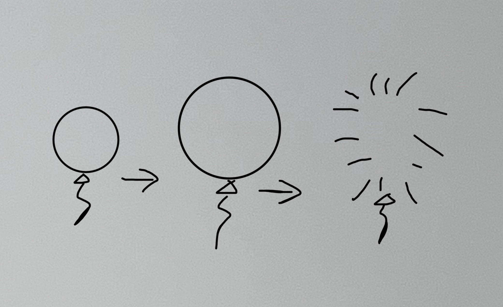

In this week's assignment, I used the microphone to measure how loud each breath is as the viewer blows into it. A stronger breath makes the balloon inflate faster and shifts its color from purple toward bright pink, while pausing keeps it at its current size. When the balloon is nearly full, louder breaths also make it shake more, giving the viewer a visual warning before it bursts. I chose these changes to make the balloon feel more like a real one and give the viewer a choice about when to stop.
